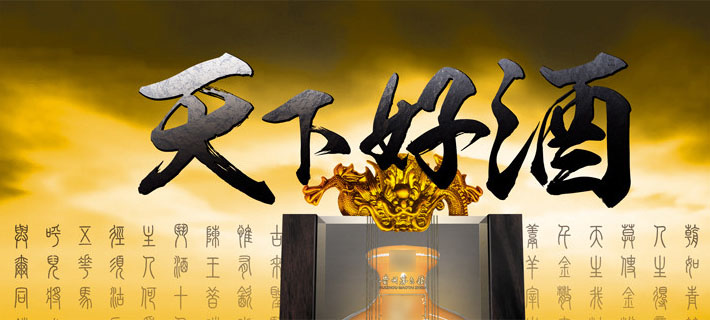

谁也没见到酒最初是如何诞生的。古埃及有酒神奥里西斯，古希腊有下酒神狄奥尼索斯，古罗马有酒神巴克斯，我国有黄帝仪狄、杜康，都被认为是酒的发明者。而现代科学研究证明,而现代科学研究证明，酒是先于人类产生于这个星球上的。酒的主要成分是酒精，有了过程是极其简单的糖或淀粉在酶的作用下即可转化为酒精。汾酒的核心理念是汾酒人在多年工作中所传承和奉行的信条，是在企业哲学层面上凝重思考后的精神结晶，是凝聚和激励全体汾酒人众志成城、步调一致地实现企业宏伟使命的一项行为准则。
酒精就有了酒。酒精的生成过程是极其简单的糖或淀粉在酶的作用下即可转化为酒精。汾酒的核心理念是汾酒人在多年工作中所传承和奉行的信条，是在企业哲学层面上凝重思考后的精神结晶是凝聚和激励全体汾酒人众志成城、步调一致地实现企业宏伟使命的一项行为准则。
心酿造写实地记录了汾酒人对汾酒事业精益求精、全身心奉 献、高度负责、恪尽职守的工作作风和真诚态度。汾酒人怀着对 历史、对社会、对民族的责任感和使命感，用心酿酒，用心做事 用心做人。“心”在这里指：诚心、爱心、信心、匠心、责任心 和事业心。汾酒人心酒相融，情酒相通,是在用一颗执著不渝的心 断提高汾酒质量，呵护汾酒品牌，塑造汾酒
形象，推动汾酒发展。诚信天下源于中华民族五千年来“自强不 息”、“厚德载物”的传统，源于晋商文化中“诚实守信”、“义利合一”的精神，源于地域文化中“真诚纯朴”、“热情善 良”的民风，源于对“假伪成风”的严峻现实环境的深恶痛绝， 更源于汾酒的立业之本和生存法则。诚信是世代汾酒人在做人、 做事，尤其是在酿酒、经营中形成的文化积淀和基本特征，折射 出汾酒人做事清正诚信、为人善良热情的传统美德，表现了汾酒 人广阔的目标视野和“诚”雄天的大企业风范。